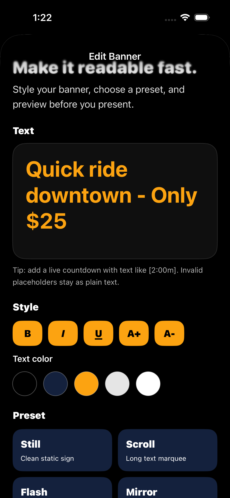

Saved banners
Create reusable signs for common messages like pickups, meeting points, instructions, or event cues.
Flash Sign Banner turns your phone into a bright, readable sign when speaking is hard, awkward, too quiet, or just not the fastest option. Save common messages, style them, and present them full screen.
Flash Sign Banner is built around the moment you need someone across a room, curb, gate, or crowd to read your screen.
Create reusable signs for common messages like pickups, meeting points, instructions, or event cues.
Adjust text size, style, color, and background using a focused palette built for high contrast.
Say “Hey Siri, show a sign in Flash Signs,” then tell Siri the banner text. You can also say “Make a sign in Flash Signs.”
Choose from Still, Scroll, Flash, Mirror, Big, Shake, Bloom, and Ripple for the right level of attention.
Type messages like “Back in [2:00m]” and Flash Sign Banner renders the countdown live during presentation.
Controls stay out of the way so the message is the hero, with deliberate actions for editing or exiting.
No backend is needed for the first version. Your saved signs live on your device unless you choose to share them.
Siri uses a quick two-step shortcut so your banner text is captured cleanly.
Hey Siri, show a sign in Flash Signs
When Siri asks for the text, say the message you want shown. The app creates a saved banner and presents it right away.
Hey Siri, make a sign in Flash Signs
Create a banner, style it quickly, and show it full screen from the app or Siri.


Unlimited saved banners are available through Apple in-app purchase. No subscription. No ads.